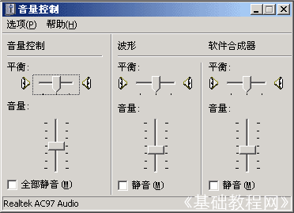
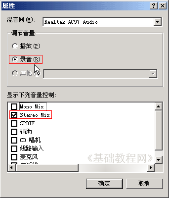
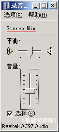

Goldwave 基础入门教程
九、录制电脑播放的音乐 返回
有时候碰到一些好听的音乐或是在线电影，可以用GoldWave录下来，下面我们来看一个练习；
1、启动Goldwave
1）点击桌面上的Goldwave图标，或者在安装文件夹中双击Goldwave图标，就可以运行Goldwave；
2）第一次启动时会出现一个提示，这儿点“是”即可，自动生成一个当前用户的预置文件；
3）顺利进入后出现一个灰色空白窗口，旁边是一个暗红色的控制器窗口，它是用来控制播放的；
2、设置录音设备
1）点“开始－所有程序－附件－娱乐－音量控制”，也可以在屏幕右下角的小喇叭上双击；

2）点菜单“选项－属性”命令，出来一个面板，在中间选择“录音”，在下面把混合立体声 Stereo Mix打勾，其他去掉点“确定”返回；

3）适当调整滑块音量大小，也可以先最小化，录一段试听后再调整；

3、录制音乐
1）在GoldWave中新建一个音乐文件，一般歌曲可以用22050和5分钟，然后点红色的录音按钮；
2）播放音乐文件，这样Goldwave就可以录制了，录好后保存一下文件；
本节学习了使用Goldwave录制电脑播放音乐的基本方法，如果你成功地理解并完成了练习，请继续学习下一课内容；
本教程由86团学校TeliuTe制作|著作权所有
基础教程网：http://teliute.org/
美丽的校园……
|
|
转载和引用本站内容，请保留版权信息和本站链接。